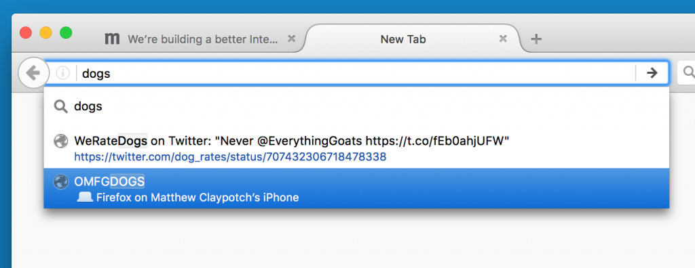
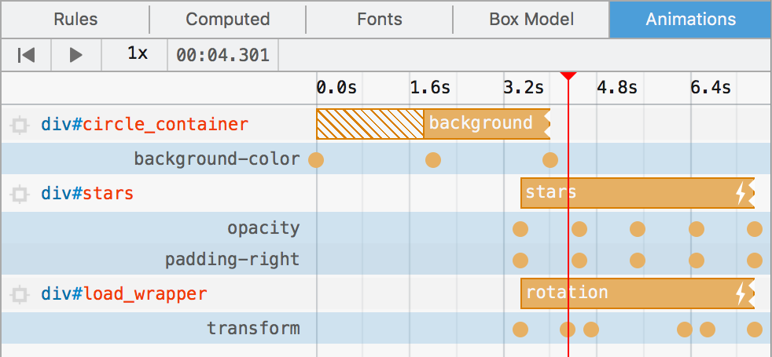
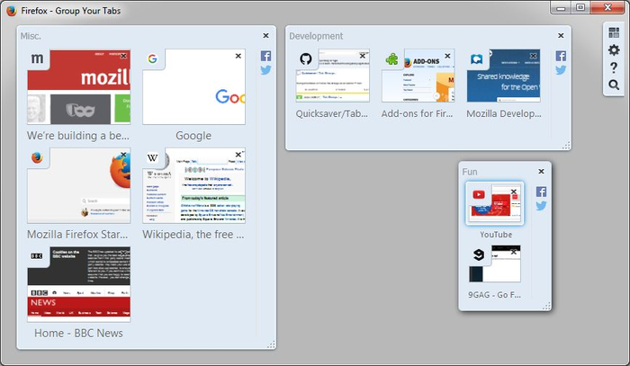

〈Trainspotting〉系列文章將重點提示 Firefox 最新版本的已上線功能。Firefox 現固定每 6 個星期釋出新版本，而我們稱此種模式為「Release trains」。
三月風帶來四月雨，最新版的 Firefox 也跟著春燕來了！一起來看看新版瀏覽器的新功能與變化吧！
分頁同步

針對你在另台裝置的 Firefox 中開啟過的分頁，智慧位址列 (Awesome Bar) 現可自動建議這些網頁，讓你能迅速找回自己留在手機或公司電腦上還沒看過的內容。 另可透過工具列按鈕選單，找到在其他裝置上開啟過的分頁清單。
開發者工具

從 Firefox 40 開始，就能依照網址篩選網路請求，但現在可於篩選條件前方加上「-」，藉以過濾不想要的請求。如果是那種需要較長開啟時間且會產生許多請求的單頁面 Web App，此一功能就特別有用。
動畫面板功能強化

「動畫 (Animation)」面板現在又提供許多新功能 (又來？開發者工具實在太多功能了)。現可檢視各組動畫所修改的獨立屬性。針對各組套用特定 CSS 屬性的 keyframe，時間軸的展開檢視功能現能另行標記。
Firefox 45 現更可調整動畫面板中的播放速率，透過慢、動、作的方式微調複雜序列。此功能應可協助加快除錯。
分頁群組

歡送又迎來「分頁群組 (Tab Groups)」！如果你知道 Firefox 的分頁群組功能，大概就代表你是該功能的死忠用戶了。但其實用這個功能的人不多，所以我們移除此功能以簡化 Firefox 程式碼。別擔心！附加元件開發者 Quicksaver 讓分頁群組的程式碼成為 Firefox 擴充套件了！所有的整理與拖曳方式都跟之前一樣。感謝 Quicksaver 讓死忠粉絲繼續留有愛用的功能！
Firefox 45 還有太多功能，每次這種短文根本寫不完。請參閱版本說明或 MDN 上的開發者應知道的變更細節清單。